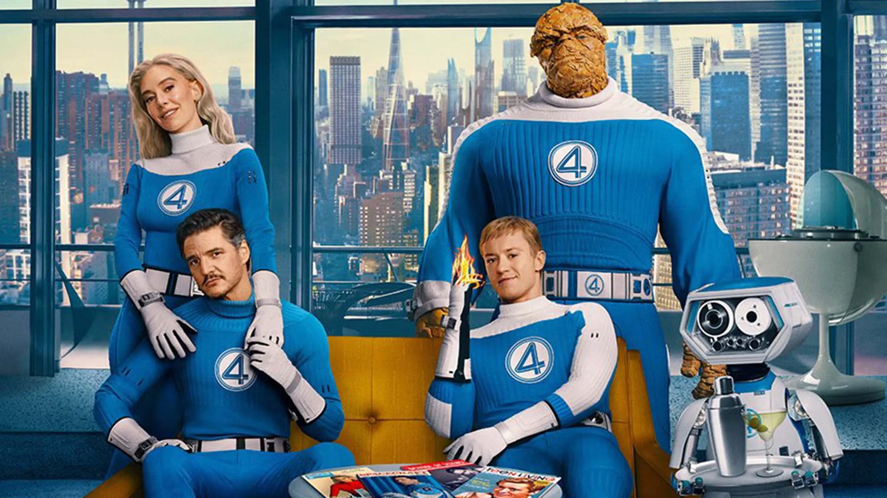

J'ai eu la chance d'écouter ce film récemment celui-ci parle qu'Après un accident spatial, quatre scientifiques obtiennent des pouvoirs surhumains et deviennent les Quatre Fantastiques. Ensemble, ils doivent apprendre à travailler en équipe pour affronter Galactus, une entité cosmique menaçant de détruire la Terre, et son héraut, le Silver Surfer.

Source : Wikipedia
Ce film se démarque de plusieurs façons: les acteurs sont remarquable, mené par Pedro Pascal et Vanessa Kirby, apporte une vraie profondeur aux personnages. L'esthétique rétro-futuriste donne au film un côté unique et originale.Enfin, le film réussit à mélanger action, émotion et thèmes familiaux, offrant une histoire touchante et humaine au coeur d'un univers de superhéro.
Selon moi, le seul petit défaut serait le manque de profondeur sur les deux méchants: Galactus et Silver Sufer. Nous comprenons vite l'histoire de Silver Surfer mais la fin du film aurait eu plus de valoir si on aurait plus vu son histoire.